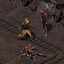
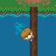
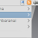
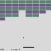
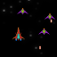

Justin Jacobs
I'm a computer programmer/hobbyist from Massachusetts, USA. I like to program games, and I primarily develop them under GNU/Linux. This page serves as a summary of my work, all of which is licensed under some form of copyleft license.

Flare
Clint Bellanger's Flare is a fantastic free-software action RPG, similar to the Diablo series. I've been helping with development since March of 2012. Most of my programming time is now spent on Flare, be it small bugfixes or brand new features. It's nice to be able to work on an ambitious project that still has a relatively simplistic codebase.

Woods
My February 2013 OneGameAMonth project. The goal of the game is to balance on a log to get across the river. Not really a complex game, but I've heard it's nice to play on a laptop with an accelerometer.
FreeBlocks
My January 2013 OneGameAMonth project. I had always wanted to make a puzzle game like Tetris Attack. I'm pleased with how this one turned out. It's not as complete as Tetris Attack, but it's still a lot of fun to play.

Feedreader
This is a really simple RSS reader made with GTK2 that sits in the system tray. Most of the RSS readers I used before were either bloated GUIs or CLI only. I wanted to make a lightweight GUI program to fit in between those two extremes.

Block Breaker
An Arkanoid/Breakout clone that I made to learn about drawing primitive shapes with the SDL_gfx package. The ball physics are not very good, but I didn't spend much time working on this.

Espada
This was my first true game made with C and SDL. While not a terrible game, I made a lot of mistakes back then. I plan to rewrite and redesign this game as one of my 2013 OneGameAMonth projects.